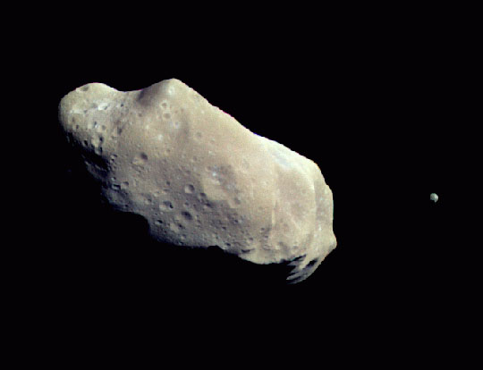
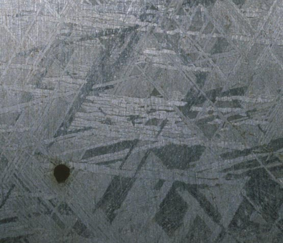

Asteroids are by far the most numerous inhabitants of our solar system, with thousands large enough for astronomers to photograph. They may not have the visual glamour of comets, but asteroids offer their own remarkable sights and allow us to study the basic makeup of our own world.
Two Main Categories
Asteroids fall into two broad groups. Belt asteroids lie in the asteroid belt between Mars and Jupiter — a vast ring of rocky debris left over from the solar system's formation. Earth-crossing asteroids (also called Apollo, Amor, or Aten asteroids) follow elliptical orbits that cross Earth's path through space.
Made of stone or nickel-iron, these bodies often interact with each other. They can crash into one another — and many asteroids end up orbiting each other in pairs, one of the more unusual sights in the solar system.

Windows into the Early Solar System
When astronomers study an asteroid, they are often examining something that has existed in an essentially unaltered form since the beginning of the solar system. These bodies would have formed the core of a planet had it not been for the disruptive gravity of nearby giants like Jupiter. Studying them gives us a direct look at the raw materials from which planets like Earth were built.
The Beautiful Interior of a Nickel-Iron Asteroid
One of the most striking phenomena involves asteroids with nickel-iron composition. Occasionally, pieces of these reach Earth as meteorites. When a cross-section of nickel-iron meteorite is polished and etched with acid, it reveals a stunning geometric crystalline structure — called a Widmanstätten pattern — that forms only in metal that has cooled over many millions of years at a rate of only about 1°C per million years. This structure cannot be reproduced in a laboratory.

Observing Asteroids
Several asteroids are within reach of binoculars or a small telescope. The brightest — Ceres — was discovered by Italian astronomer Giuseppe Piazzi on New Year's Day, 1801. Ceres lies in the main asteroid belt and measures about 940 km in diameter, large enough that it has been reclassified as a dwarf planet. With a medium-size telescope at high power, observers can sometimes detect its tiny disc.
Other bright asteroid targets include Vesta, which can sometimes be spotted with the naked eye under dark skies, and Pallas. Tracking an asteroid's motion against the background stars over a few nights — it will shift noticeably — is one of the most satisfying observing projects you can do.